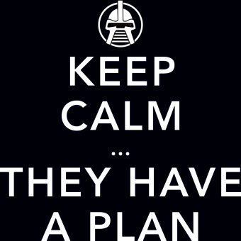
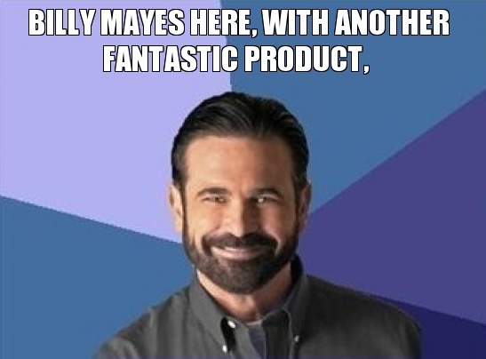
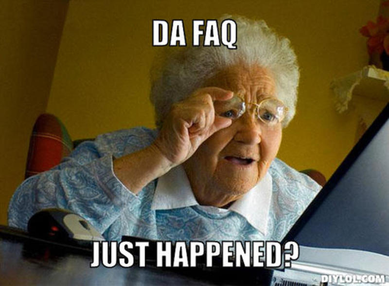
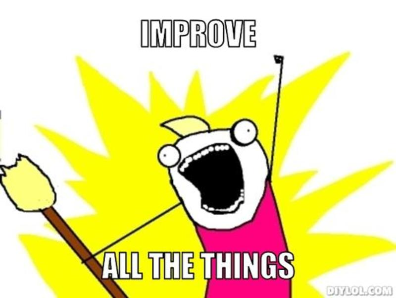
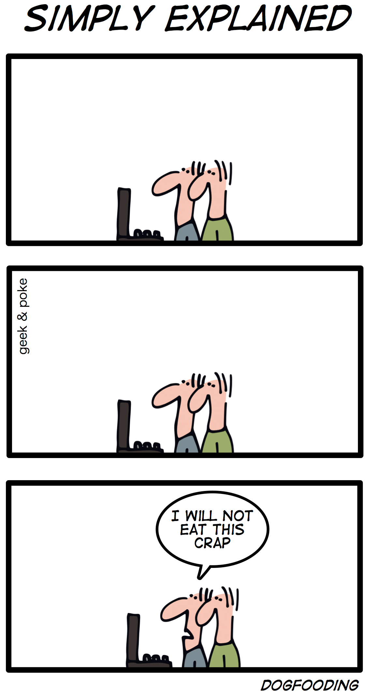

Surviving Support
10 Tips for Saving Your Users and Yourself
Julie Cameron | CodeMash 2014
Julie Cameron
- Remote Frontender for Articulate
Advocate of Sass, Modular Architecture, and Responsive Web Design
- Girl Develop It Detroit Instructor
- Open Source Developer
SlickQuiz
An open source plugin for creating pretty, dynamic quizzes.
https://github.com/jewlofthelotus/SlickQuiz
but then...
Tech Support
SlickQuiz Support
Blog Comments
WP.org Support Threads
GitHub Issues
Stack Overflow Posts
Twitter Messages
Email Inquiries
SlickQuiz Support Challenges
jQuery / WordPress Segregation
Question / Response Repetition
Time for Support vs. New Features
Challenges of Good Support
Organization
Time & Resources
Communication
Perception
Empathy
Benefits of Good Support
Happy Users
Better Reviews
Increased Exposure
Higher Adoptance
Saved Time & Money
10 Tips
For Saving Your Users and Yourself
Tip 1 Actually provide support

Respond to your users
... and do it quickly
... but not too quickly.
Don't wait, act now!
Tip 2 Have a plan
And make that plan clear to your users.

Tip 3 Know your product
...and make sure your users do, too.

- Establish product development guidelines.
- Be prepared to tell users that their request is out of scope.
- Let users know what features are in the pipe.
Tip 4 Provide instructions
...and be very... thorough.

- Have a well organized, comprehensive, and clear README.
- Incorporate how-to videos and screen shots.
- Encourage users to RTFM BEFORE contacting support.
Tip 5 Embrace the FAQ
And stop repeating yourself.

- Anticipate questions before they come through support.
- Include responses to even the most basic of questions.
- If you answer the same question more than once, add it to the FAQ.
Tip 6 Make it better
A support request indicates a way to improve.

- Look for patterns in your support requests.
(Hint: Use a tagging system) - If you have to put it in the FAQ, start thinking about how to improve it.
- Clarify / simplify the UI
- Adjust functionality
- Add a new feature
Tip 7 Broadcast your updates
Socially. Via a blog. Via newsletters. Via push notifications.
- Make sure people know you made an improvement, fixed their bug, or added their feature idea.
- Provide detailed descriptions of these updates.
- Keep READMEs and FAQs up to date too.
Tip 8 Listen and relax
Don't take frustration or ignorance personally.

- Empathize with your users.
- Communicate clearly and proof-read.
- Reiterate and confirm your understanding / interpretation.
- Use clean formatting. Paragraphs, bold, code blocks, images, etc.
- Numbered lists for steps.
- Quotes to reference named elements of your product.
- Be gracious, personable and thankful.
- Know when to walk. Don't get mad. Don't take abuse.
Tip 9 Establish a fan base
Happy Users == Happy Support == Happy Advocates.
- Make support easy. Help them... help you... help them.
- Be friendly and thank users for trying your product.
- Credit users for their finds and ideas.
- Add the features they're all asking for.
- Check in with your users on occasion.
Tip 10 Be your own user
 Geek & Poke
Eat your own dogfood.
Especially if you're not the developer.
Know the tool. Know the bugs. Know how to improve.
Final Words of Wisdom
Treat your users how you'd want to be treated.
Questions?
#SurvivingSupport | @JewlOfTheLotus